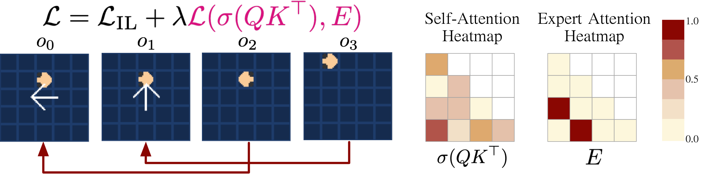
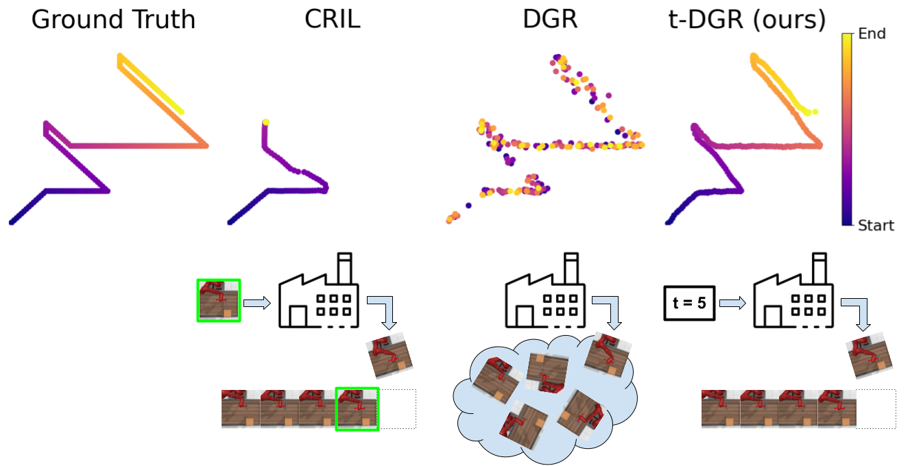
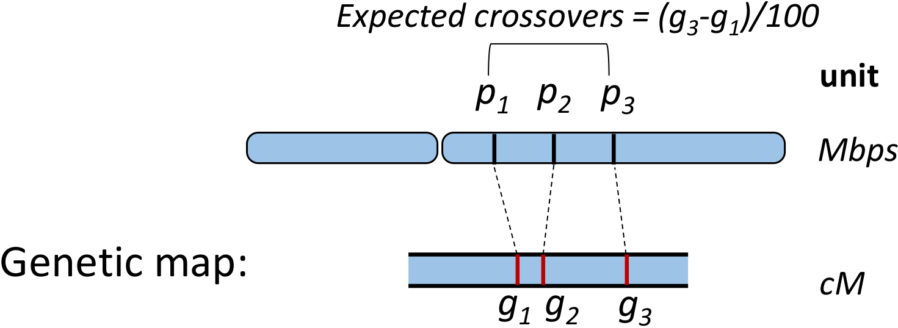
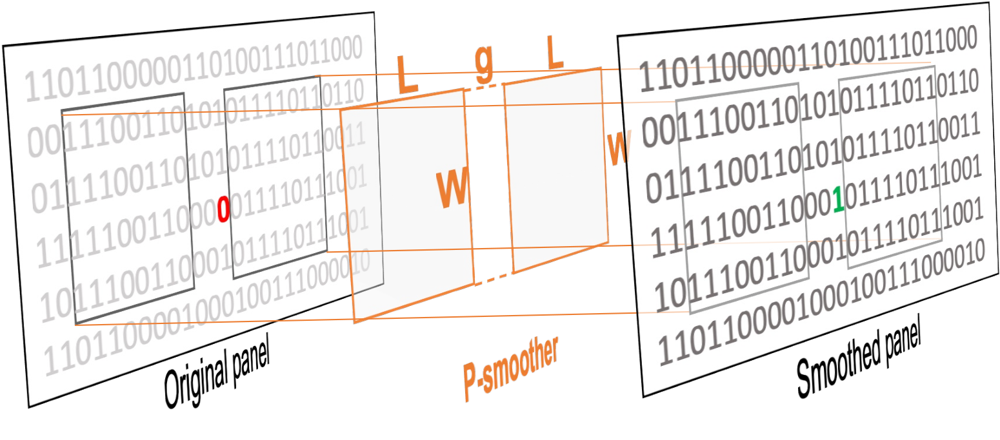
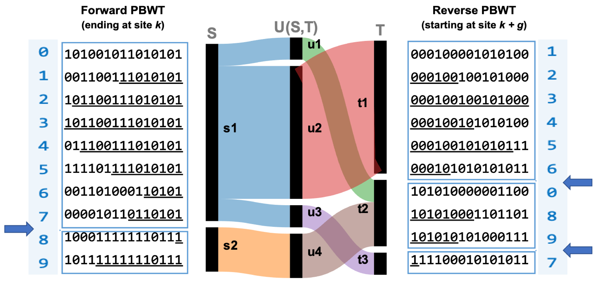

Research
I'm interested in machine learning, decision making, and robotics.

Learning Memory Mechanisms for Decision Making through Demonstrations
William Yue ,
Bo Liu ,
Peter Stone
arXiv
/
code
A framework for learning memory mechanisms for decision making through demonstrations.

t-DGR: A Trajectory-Based Deep Generative Replay Method for Continual Learning in Decision Making
William Yue ,
Bo Liu ,
Peter Stone
COLLA , 2024
AAMAS Extended Abstract , 2024
NeurIPS ALOE Workshop , 2023
project page
/
arXiv
/
code
A deep generative replay method that generates samples by conditioning on the trajectory timestep.

Fast inference of genetic recombination rates in biobank scale data
Ardalan Naseri ,
William Yue ,
Shaojie Zhang ,
Degui Zhi
Genome Research , 2023
RECOMB , 2023
ASHG , 2021 (Reviewers' Choice Award) bioRXiv
/
code
An efficient tool to infer recombination rates using a biobank-scale haplotype panel.

P-smoother: efficient PBWT smoothing of large haplotype panels
William Yue* ,
Ardalan Naseri* ,
Victor Wang ,
Pramesh Shakya ,
Shaojie Zhang ,
Degui Zhi
Bioinformatics Advances , 2022
code
An efficient method to correct recent mutations and genotyping errors in biobank-scale haplotype panels.

Efficient Haplotype Block Matching in Bi-Directional PBWT
Ardalan Naseri* ,
William Yue* ,
Shaojie Zhang ,
Degui Zhi
WABI , 2021
code
An efficient method to find blocks of matches around each variant site and study the changes of matching blocks using forward and reverse PBWT.
Robot Videos
Here are videos of some of the robots I've worked with.
Fourier GR1
VIDEO
A humanoid robot pouring wine into a cup.
Jackal UGV
VIDEO
Autonomous Jackal UGV Uses Elevator in UT's Gates-Dell Complex.
F1/10 Car
VIDEO
An autonomous driving algorithm using particle filters for localization and both global and local planners.
Website design is taken from here .
{kind=link}